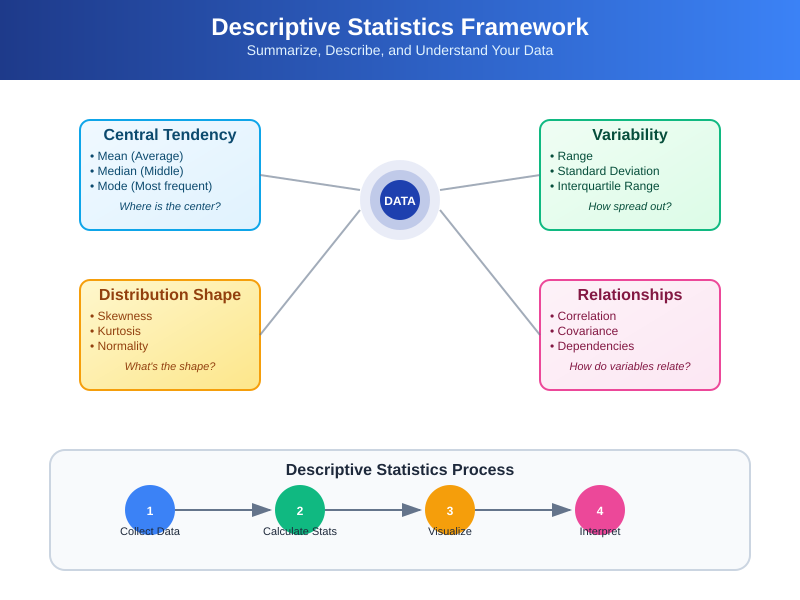
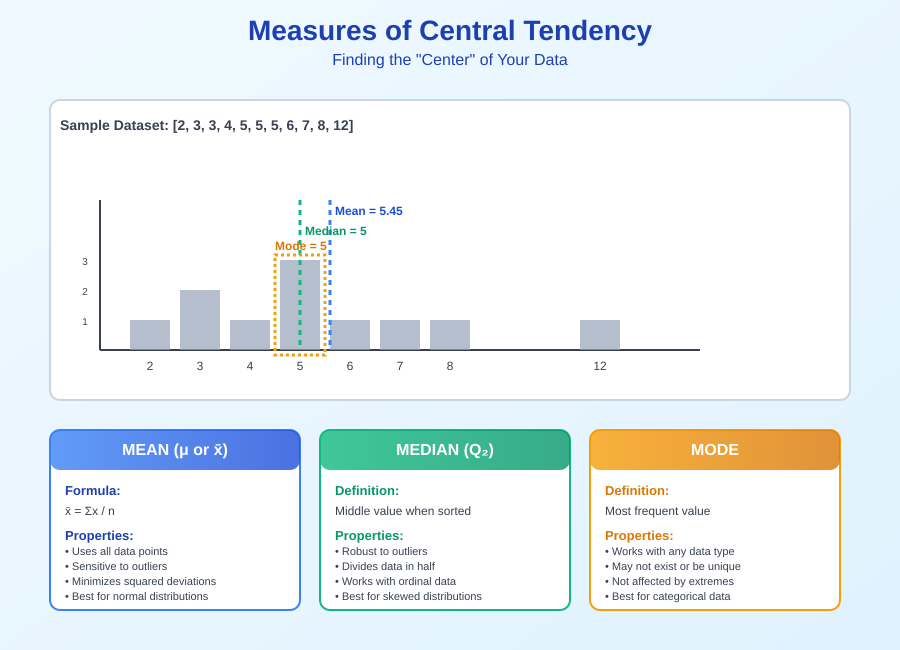
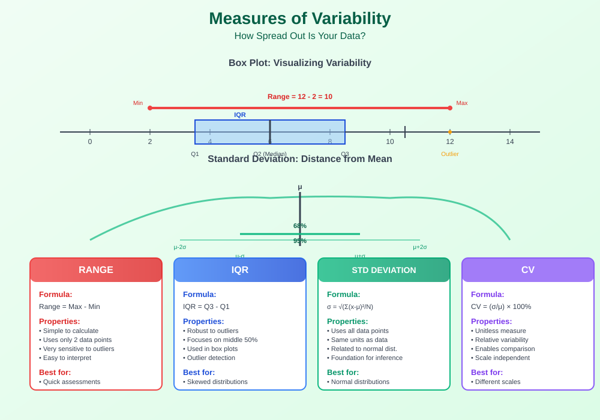
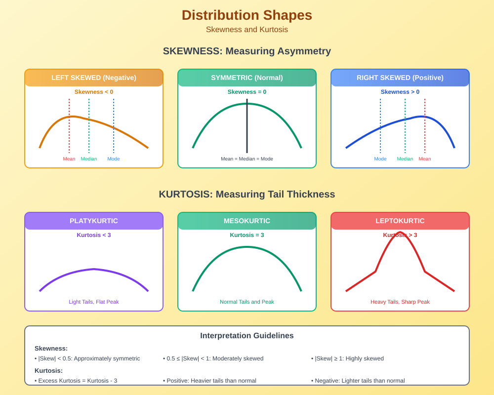
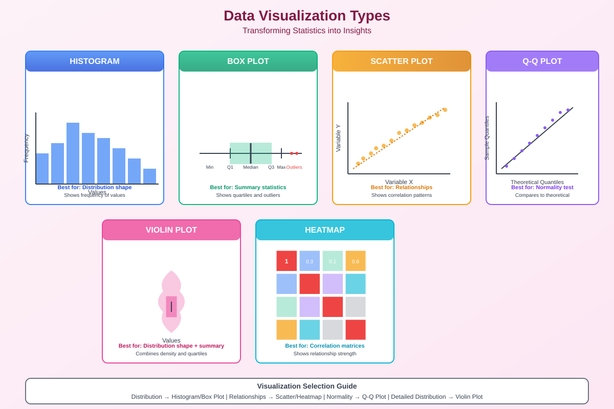
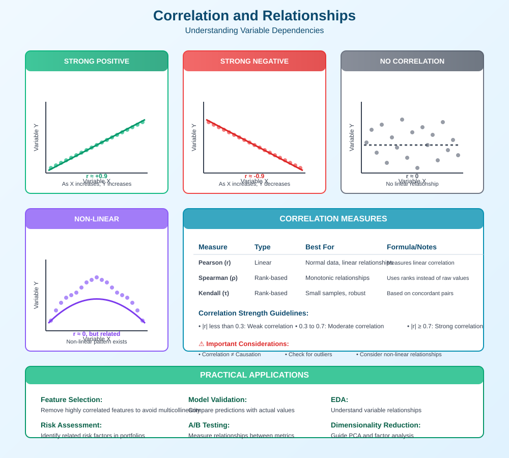
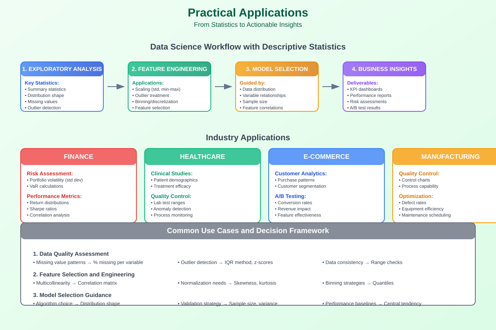

Descriptive Statistics: Complete Guide for Data Science
📊 A comprehensive guide to understanding and applying descriptive statistics in data science, machine learning, and research
🧭 Quick Navigation
- 📋 Overview
- 📐 Measures of Central Tendency
- 📏 Measures of Variability
- 📈 Measures of Shape
- 📊 Data Visualization
- 🔗 Correlation and Relationships
- 📱 Practical Applications
- 🧪 Hands-on Examples
- 📚 References & Further Reading
📋 Overview
Descriptive statistics form the foundation of data analysis, providing essential tools to summarize, describe, and understand datasets. Unlike inferential statistics that make predictions about populations, descriptive statistics focus on describing the characteristics of observed data.

Why Descriptive Statistics Matter
Descriptive statistics serve several critical purposes in data science:
- Data Understanding: Quickly grasp the main characteristics of your dataset
- Quality Assessment: Identify outliers, missing values, and data inconsistencies
- Feature Engineering: Inform decisions about data preprocessing and transformation
- Model Preparation: Guide algorithm selection and hyperparameter tuning
- Communication: Present findings clearly to stakeholders and decision-makers
Types of Variables
Understanding variable types is crucial for selecting appropriate descriptive measures:
- Quantitative Variables:
- Continuous: Can take any value within a range (height, weight, temperature)
-
Discrete: Can only take specific values, usually integers (number of children, count of events)
-
Qualitative Variables:
- Nominal: Categories with no natural order (color, gender, brand)
- Ordinal: Categories with natural ordering (education level, satisfaction rating)

📐 Measures of Central Tendency
Central tendency measures indicate where the center or typical value of a distribution lies. These are among the most fundamental descriptive statistics.

Mean (Arithmetic Average)
The mean is the sum of all values divided by the number of observations.
Formula:
Properties: - Sensitive to outliers: Extreme values can significantly affect the mean - Algebraic: Supports mathematical operations and transformations - Unique: Each dataset has exactly one mean - Minimizes squared deviations: The sum of squared differences from the mean is minimal
When to Use: - Data is approximately normally distributed - No extreme outliers present - Need a measure that uses all data points
Median
The median is the middle value when data is arranged in ascending order.
Calculation: - For odd n: Median = middle value - For even n: Median = average of two middle values
Properties: - Robust to outliers: Not affected by extreme values - Positional: Based on data ordering, not actual values - Divides distribution: 50% of data falls below, 50% above
When to Use: - Data contains outliers - Distribution is skewed - Working with ordinal data - Need a robust measure of center
Mode
The mode is the most frequently occurring value(s) in a dataset.
Types:
- Unimodal: One mode
- Bimodal: Two modes
- Multimodal: Multiple modes
- No mode: All values occur with equal frequency
Properties: - Can be used with any data type: Works with nominal, ordinal, and quantitative data - May not exist or may not be unique - Not affected by extreme values
When to Use: - Categorical data analysis - Identifying most common occurrences - Understanding distribution peaks
Choosing the Right Measure
| Distribution Type | Best Measure | Reason |
|---|---|---|
| Normal/Symmetric | Mean | Uses all information, mathematically optimal |
| Skewed | Median | Robust to outliers and skewness |
| Categorical | Mode | Only meaningful measure for nominal data |
| Bimodal | Mode | Reveals multiple peaks in distribution |
📏 Measures of Variability
Variability measures describe how spread out or dispersed the data points are around the central tendency. These statistics are crucial for understanding data distribution and making informed analytical decisions.

Range
The range is the simplest measure of variability, representing the difference between the maximum and minimum values.
Formula:
Properties: - Easy to calculate and interpret - Highly sensitive to outliers - Only uses two data points - Not suitable for skewed distributions
Interquartile Range (IQR)
The IQR measures the spread of the middle 50% of the data, providing a robust measure of variability.
Formula:
Where: - Q₁ = First quartile (25th percentile) - Q₃ = Third quartile (75th percentile)
Properties: - Robust to outliers - Focuses on central data - Useful for identifying outliers - Works well with skewed distributions
Variance
Variance measures the average squared deviation from the mean.
Population Variance:
Sample Variance:
Properties: - Uses all data points - Always non-negative - Sensitive to outliers - Units are squared
Standard Deviation
Standard deviation is the square root of variance, providing a measure in the original units.
Population Standard Deviation:
Sample Standard Deviation:
Properties: - Same units as original data - Interpretable in context - Foundation for many statistical procedures - Related to normal distribution (68-95-99.7 rule)
Coefficient of Variation
The coefficient of variation provides a standardized measure of variability relative to the mean.
Formula:
Properties: - Unitless measure - Enables comparison across different scales - Useful for relative variability assessment - Not meaningful when mean is close to zero
Choosing Variability Measures
| Data Characteristics | Recommended Measure | Rationale |
|---|---|---|
| Normal distribution, no outliers | Standard Deviation | Uses all information, standard measure |
| Skewed or with outliers | IQR | Robust to extreme values |
| Different units/scales | Coefficient of Variation | Enables relative comparison |
| Quick assessment | Range | Simple but limited information |
📈 Measures of Shape
Shape measures describe the asymmetry and tail behavior of data distributions, providing insights into the underlying data generating process.

Skewness
Skewness measures the asymmetry of a distribution around its mean.
Formula:
Interpretation: - Skewness = 0: Perfectly symmetric distribution - Skewness > 0: Right-skewed (positive skew) - tail extends to the right - Skewness < 0: Left-skewed (negative skew) - tail extends to the left
Practical Guidelines:
- |Skewness| < 0.5: Approximately symmetric
- 0.5 ≤ |Skewness| < 1: Moderately skewed
- |Skewness| ≥ 1: Highly skewed
Kurtosis
Kurtosis measures the "tailedness" or extremeness of a distribution.
Formula:
Types: - Mesokurtic (Kurtosis ≈ 3): Normal distribution-like tails - Leptokurtic (Kurtosis > 3): Heavy/fat tails, more extreme values - Platykurtic (Kurtosis < 3): Light/thin tails, fewer extreme values
Excess Kurtosis:
- Excess Kurtosis = 0: Normal distribution
- Excess Kurtosis > 0: Heavier tails than normal
- Excess Kurtosis < 0: Lighter tails than normal
Practical Implications
Understanding distribution shape is crucial for:
- Algorithm Selection: Some ML algorithms assume specific distributions
- Data Transformation: Identifying need for log, square root, or other transformations
- Outlier Detection: Heavy-tailed distributions may have more extreme values
- Risk Assessment: Financial and risk models depend heavily on tail behavior
Common Distribution Shapes in Data Science
| Distribution Type | Skewness | Kurtosis | Common Examples |
|---|---|---|---|
| Normal | 0 | 3 | Height, IQ scores, measurement errors |
| Log-normal | > 0 | > 3 | Income, file sizes, reaction times |
| Exponential | > 0 | 9 | Time between events, failure rates |
| Uniform | 0 | 1.8 | Random number generation |
| Bimodal | Variable | < 3 | Mixed populations, A/B testing |
📊 Data Visualization
Effective visualization transforms raw statistics into interpretable insights. Different chart types reveal different aspects of your data's story.

Histograms
Histograms display the frequency distribution of continuous variables.
Key Features: - Bins: Intervals that group data points - Frequency/Density: Height represents count or proportion - Shape Visualization: Reveals distribution characteristics
Best Practices: - Bin Selection: Use 5-20 bins for most datasets - Equal Width: Maintain consistent bin sizes - Proper Labeling: Include axis labels and titles
When to Use: - Understanding data distribution - Identifying skewness and outliers - Assessing normality
Box Plots (Box-and-Whisker Plots)
Box plots provide a five-number summary visualization.
Components: - Box: Represents IQR (Q1 to Q3) - Median Line: Shows central tendency - Whiskers: Extend to min/max or 1.5×IQR - Outliers: Points beyond whiskers
Advantages: - Robust to outliers - Compact representation - Easy comparison across groups - Immediate identification of outliers
Q-Q Plots (Quantile-Quantile Plots)
Q-Q plots compare sample quantiles against theoretical distribution quantiles.
Interpretation: - Straight Line: Data follows the theoretical distribution - S-Curve: Heavy tails (leptokurtic) - Inverted S-Curve: Light tails (platykurtic) - Curved Pattern: Skewed distribution
Scatter Plots
Scatter plots reveal relationships between two continuous variables.
Applications: - Correlation Analysis: Identify linear/non-linear relationships - Outlier Detection: Spot unusual data combinations - Pattern Recognition: Discover clusters or trends
Violin Plots
Violin plots combine box plots with kernel density estimation.
Advantages: - Distribution Shape: Shows full probability density - Multiple Modes: Reveals bimodal or multimodal distributions - Group Comparison: Effective for comparing distributions
Visualization Selection Guide
| Purpose | Best Visualization | Alternative Options |
|---|---|---|
| Single variable distribution | Histogram | Density plot, Box plot |
| Compare groups | Box plot | Violin plot, Strip plot |
| Assess normality | Q-Q plot | Histogram with normal overlay |
| Two variable relationship | Scatter plot | Hexbin plot, 2D density |
| Categorical data | Bar chart | Pie chart, Treemap |
🔗 Correlation and Relationships
Understanding relationships between variables is fundamental to data science. Correlation measures help quantify and interpret these relationships.

Pearson Correlation Coefficient
Pearson's r measures linear relationships between continuous variables.
Formula:
Properties: - Range: -1 ≤ r ≤ 1 - Interpretation: - r = 1: Perfect positive linear relationship - r = 0: No linear relationship - r = -1: Perfect negative linear relationship
Strength Guidelines: - |r| < 0.3: Weak correlation - 0.3 ≤ |r| < 0.7: Moderate correlation - |r| ≥ 0.7: Strong correlation
Spearman Rank Correlation
Spearman's ρ (rho) measures monotonic relationships using ranks.
Formula:
Where dᵢ is the difference between ranks of corresponding values.
Advantages: - Non-parametric: No assumptions about data distribution - Robust to outliers - Captures non-linear monotonic relationships - Works with ordinal data
Kendall's Tau
Kendall's τ (tau) measures the strength of dependence between two variables.
Properties: - Robust: Less sensitive to outliers than Pearson - Bounded: -1 ≤ τ ≤ 1 - Interpretable: Represents probability difference of concordant vs. discordant pairs
Correlation Matrix and Heatmaps
Correlation matrices summarize relationships among multiple variables simultaneously.
Benefits: - Comprehensive View: See all pairwise relationships - Pattern Recognition: Identify variable clusters - Multicollinearity Detection: Spot highly correlated predictors - Feature Selection: Guide variable selection for modeling
Important Considerations
Correlation ≠ Causation - Correlation only measures association, not causal relationships - Consider confounding variables and alternative explanations - Use experimental design or causal inference methods for causation
Non-linear Relationships - Pearson correlation may miss non-linear patterns - Consider scatter plots and non-parametric measures - Transform variables when appropriate
Outlier Impact - Extreme values can dramatically affect correlation - Investigate and handle outliers appropriately - Consider robust correlation measures
Practical Applications in Data Science
| Application Area | Correlation Use | Key Considerations |
|---|---|---|
| Feature Selection | Remove highly correlated features | Avoid multicollinearity |
| Exploratory Data Analysis | Understand variable relationships | Multiple correlation types |
| Model Validation | Compare predictions with actuals | Consider residual patterns |
| Dimensionality Reduction | Guide PCA and factor analysis | Linear vs. non-linear methods |
📱 Practical Applications
Descriptive statistics find extensive application across various domains in data science, machine learning, and business analytics.

Exploratory Data Analysis (EDA)
EDA forms the foundation of any data science project:
Initial Data Assessment: - Data Quality: Identify missing values, duplicates, and inconsistencies - Distribution Understanding: Assess normality, skewness, and outliers - Variable Relationships: Explore correlations and dependencies - Pattern Recognition: Discover unexpected trends and anomalies
Key EDA Statistics: - Summary Statistics: Mean, median, standard deviation for each variable - Quantile Analysis: Percentiles to understand data spread - Missing Data Patterns: Percentage and distribution of missing values - Correlation Analysis: Pairwise relationships between variables
Feature Engineering
Descriptive statistics guide effective feature creation:
Scaling and Normalization: - Z-score standardization: Using mean and standard deviation - Min-max scaling: Using minimum and maximum values - Robust scaling: Using median and IQR for outlier resistance
Outlier Detection: - IQR Method: Values beyond Q1 - 1.5×IQR or Q3 + 1.5×IQR - Z-score Method: Values with |z| > 3 (for normal distributions) - Percentile Method: Values beyond specific percentile thresholds
Binning and Discretization: - Equal-width binning: Using range and desired number of bins - Equal-frequency binning: Using quantiles - Custom binning: Using domain knowledge and distribution characteristics
Model Selection and Validation
Statistical characteristics inform algorithm choices:
Algorithm Suitability:
| Data Characteristics | Suitable Algorithms | Reasoning |
|---|---|---|
| Normal distribution | Linear regression, SVM | Assumes Gaussian errors |
| Skewed distribution | Tree-based methods | Robust to distribution shape |
| High correlation | Ridge/Lasso regression | Handles multicollinearity |
| Categorical target | Logistic regression, Random Forest | Classification algorithms |
Performance Metrics: - Regression: MSE, MAE based on target distribution - Classification: Accuracy, precision, recall based on class balance - Cross-validation: Stratified sampling based on target distribution
Business Intelligence and Reporting
Descriptive statistics enable effective business communication:
KPI Development: - Central Tendency: Average sales, median customer value - Variability: Performance consistency, risk assessment - Trends: Month-over-month growth, seasonal patterns
Dashboard Design: - Summary Cards: Key metrics with context - Distribution Views: Histograms and box plots for deeper insights - Comparison Charts: Performance across segments or time periods
Quality Control and Monitoring
Statistical process control relies heavily on descriptive statistics:
Control Charts: - X-bar charts: Monitor process mean over time - R charts: Track process variability - Control limits: Typically ±3 standard deviations from mean
Anomaly Detection: - Statistical thresholds: Based on historical mean and standard deviation - Seasonal adjustment: Account for cyclical patterns - Trend analysis: Monitor long-term changes in key metrics
A/B Testing and Experimentation
Descriptive statistics support experimental design and analysis:
Sample Size Calculation: - Effect size estimation: Expected difference between groups - Power analysis: Using variance estimates - Minimum detectable effect: Based on baseline statistics
Results Analysis: - Group comparison: Means, medians, and distributions - Practical significance: Effect size interpretation - Confidence intervals: Uncertainty quantification

🧪 Hands-on Examples
Let's explore practical implementations of descriptive statistics using Python libraries and real-world datasets.
Example 1: Basic Descriptive Statistics
import pandas as pd
import numpy as np
import matplotlib.pyplot as plt
import seaborn as sns
from scipy import stats
# Load sample data
data = pd.read_csv('sample_dataset.csv')
# Basic descriptive statistics
print("Dataset Overview:")
print(f"Shape: {data.shape}")
print(f"Data types:\n{data.dtypes}")
print(f"\nMissing values:\n{data.isnull().sum()}")
# Summary statistics
print("\nSummary Statistics:")
print(data.describe())
# Additional statistics for numerical columns
numerical_cols = data.select_dtypes(include=[np.number]).columns
for col in numerical_cols:
print(f"\n{col} Statistics:")
print(f" Mean: {data[col].mean():.2f}")
print(f" Median: {data[col].median():.2f}")
print(f" Mode: {data[col].mode().iloc[0] if not data[col].mode().empty else 'No mode'}")
print(f" Std Dev: {data[col].std():.2f}")
print(f" Variance: {data[col].var():.2f}")
print(f" Skewness: {stats.skew(data[col]):.2f}")
print(f" Kurtosis: {stats.kurtosis(data[col]):.2f}")
print(f" CV: {(data[col].std() / data[col].mean()) * 100:.2f}%")
Example 2: Advanced Distribution Analysis
def analyze_distribution(data, column):
"""Comprehensive distribution analysis"""
# Create subplot layout
fig, axes = plt.subplots(2, 2, figsize=(15, 10))
fig.suptitle(f'Distribution Analysis: {column}', fontsize=16)
# Histogram with density curve
axes[0, 0].hist(data[column], bins=30, density=True, alpha=0.7, edgecolor='black')
axes[0, 0].axvline(data[column].mean(), color='red', linestyle='--', label=f'Mean: {data[column].mean():.2f}')
axes[0, 0].axvline(data[column].median(), color='blue', linestyle='--', label=f'Median: {data[column].median():.2f}')
axes[0, 0].set_title('Histogram with Central Tendencies')
axes[0, 0].legend()
# Box plot
axes[0, 1].boxplot(data[column])
axes[0, 1].set_title('Box Plot')
axes[0, 1].set_ylabel(column)
# Q-Q plot for normality assessment
stats.probplot(data[column], dist="norm", plot=axes[1, 0])
axes[1, 0].set_title('Q-Q Plot (Normal Distribution)')
# Violin plot
axes[1, 1].violinplot(data[column], vert=True)
axes[1, 1].set_title('Violin Plot')
axes[1, 1].set_ylabel(column)
plt.tight_layout()
plt.show()
# Statistical tests
print(f"\nStatistical Tests for {column}:")
# Normality tests
shapiro_stat, shapiro_p = stats.shapiro(data[column].sample(min(5000, len(data))))
print(f" Shapiro-Wilk Test: statistic={shapiro_stat:.4f}, p-value={shapiro_p:.4f}")
ks_stat, ks_p = stats.kstest(data[column], 'norm', args=(data[column].mean(), data[column].std()))
print(f" Kolmogorov-Smirnov Test: statistic={ks_stat:.4f}, p-value={ks_p:.4f}")
# Outlier detection using IQR method
Q1 = data[column].quantile(0.25)
Q3 = data[column].quantile(0.75)
IQR = Q3 - Q1
lower_bound = Q1 - 1.5 * IQR
upper_bound = Q3 + 1.5 * IQR
outliers = data[(data[column] < lower_bound) | (data[column] > upper_bound)]
print(f" Outliers (IQR method): {len(outliers)} ({len(outliers)/len(data)*100:.1f}%)")
# Example usage
analyze_distribution(data, 'price')
Example 3: Correlation Analysis
def correlation_analysis(data, method='pearson'):
"""Comprehensive correlation analysis"""
# Select numerical columns
numerical_data = data.select_dtypes(include=[np.number])
# Calculate correlation matrix
if method == 'pearson':
corr_matrix = numerical_data.corr(method='pearson')
elif method == 'spearman':
corr_matrix = numerical_data.corr(method='spearman')
else:
corr_matrix = numerical_data.corr(method='kendall')
# Create correlation heatmap
plt.figure(figsize=(12, 8))
mask = np.triu(np.ones_like(corr_matrix, dtype=bool))
sns.heatmap(corr_matrix, mask=mask, annot=True, cmap='coolwarm', center=0,
square=True, fmt='.2f', cbar_kws={"shrink": .8})
plt.title(f'{method.capitalize()} Correlation Matrix')
plt.tight_layout()
plt.show()
# Find strong correlations
strong_correlations = []
for i in range(len(corr_matrix.columns)):
for j in range(i+1, len(corr_matrix.columns)):
corr_value = corr_matrix.iloc[i, j]
if abs(corr_value) > 0.7: # Strong correlation threshold
strong_correlations.append({
'var1': corr_matrix.columns[i],
'var2': corr_matrix.columns[j],
'correlation': corr_value
})
if strong_correlations:
print(f"\nStrong Correlations (|r| > 0.7):")
for corr in strong_correlations:
print(f" {corr['var1']} - {corr['var2']}: {corr['correlation']:.3f}")
else:
print("\nNo strong correlations found (|r| > 0.7)")
return corr_matrix
# Example usage
correlation_matrix = correlation_analysis(data, method='pearson')
Example 4: Comprehensive EDA Function
def comprehensive_eda(data, target_column=None):
"""Complete exploratory data analysis"""
print("="*50)
print("COMPREHENSIVE EXPLORATORY DATA ANALYSIS")
print("="*50)
# Dataset overview
print(f"\n1. DATASET OVERVIEW")
print(f" Shape: {data.shape}")
print(f" Memory usage: {data.memory_usage(deep=True).sum() / 1024**2:.2f} MB")
# Data types
print(f"\n2. DATA TYPES")
print(data.dtypes.value_counts())
# Missing values
print(f"\n3. MISSING VALUES")
missing_data = data.isnull().sum()
if missing_data.any():
missing_percent = (missing_data / len(data)) * 100
missing_df = pd.DataFrame({
'Missing Count': missing_data,
'Missing Percentage': missing_percent
}).sort_values('Missing Percentage', ascending=False)
print(missing_df[missing_df['Missing Count'] > 0])
else:
print(" No missing values found!")
# Summary statistics for numerical columns
numerical_cols = data.select_dtypes(include=[np.number]).columns
if len(numerical_cols) > 0:
print(f"\n4. NUMERICAL VARIABLES SUMMARY")
print(data[numerical_cols].describe())
# Additional statistics
stats_df = pd.DataFrame({
'Skewness': data[numerical_cols].apply(lambda x: stats.skew(x)),
'Kurtosis': data[numerical_cols].apply(lambda x: stats.kurtosis(x)),
'CV': data[numerical_cols].apply(lambda x: (x.std() / x.mean()) * 100)
})
print(f"\n DISTRIBUTION CHARACTERISTICS:")
print(stats_df.round(3))
# Categorical variables
categorical_cols = data.select_dtypes(include=['object', 'category']).columns
if len(categorical_cols) > 0:
print(f"\n5. CATEGORICAL VARIABLES SUMMARY")
for col in categorical_cols:
print(f"\n {col}:")
print(f" Unique values: {data[col].nunique()}")
print(f" Most frequent: {data[col].mode().iloc[0] if not data[col].mode().empty else 'N/A'}")
if data[col].nunique() <= 10:
print(f" Value counts:\n{data[col].value_counts().head()}")
# Correlation analysis
if len(numerical_cols) > 1:
print(f"\n6. CORRELATION ANALYSIS")
correlation_analysis(data[numerical_cols])
# Target variable analysis (if specified)
if target_column and target_column in data.columns:
print(f"\n7. TARGET VARIABLE ANALYSIS: {target_column}")
if data[target_column].dtype in ['object', 'category']:
print(f" Class distribution:")
print(data[target_column].value_counts(normalize=True) * 100)
else:
analyze_distribution(data, target_column)
# Example usage
comprehensive_eda(data, target_column='target')

📚 References & Further Reading
📖 Essential Books
- "The Elements of Statistical Learning" by Hastie, Tibshirani, and Friedman
- Comprehensive coverage of statistical learning methods
- Strong foundation in descriptive and inferential statistics
-
"Python for Data Analysis" by Wes McKinney
- Practical guide to data manipulation and analysis
- Extensive coverage of pandas and statistical operations
-
Essential for hands-on implementation
-
"Practical Statistics for Data Scientists" by Bruce, Bruce, and Gedeck
- Applied focus on statistical concepts for data science
- Bridges theory and practical implementation
- Excellent examples and case studies
📄 Key Research Papers
- "A Survey of Outlier Detection Methods in Network Data" - Akoglu et al. (2015)
- Advanced outlier detection techniques
- Statistical foundations for anomaly detection
-
"Correlation and Dependence" - Reimann et al. (2008)
- Comprehensive review of correlation measures
- Non-parametric alternatives to Pearson correlation
- Mathematical foundations and applications
🌐 Online Resources
- Khan Academy Statistics Course
- Interactive lessons on descriptive statistics
- Visual explanations and practice problems
-
Towards Data Science - Statistics Section
- Current articles on statistical applications
- Real-world case studies and implementations
-
Google Colab Notebooks Collection
- Hands-on examples and tutorials
- Ready-to-run code implementations
- GitHub Repository
🔧 Tools and Libraries
Python Libraries: - pandas: Data manipulation and basic statistics - numpy: Numerical computations and array operations - scipy.stats: Advanced statistical functions - seaborn/matplotlib: Data visualization - plotly: Interactive visualizations
R Packages: - dplyr: Data manipulation - ggplot2: Data visualization - psych: Descriptive statistics - corrplot: Correlation visualization
Online Platforms: - Jupyter Notebooks: Interactive development - Google Colab: Cloud-based notebooks - Kaggle: Datasets and community examples
Last updated: September 2025 | Created for data scientists, ML engineers, and researchers